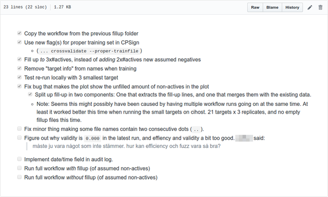

To make computational lab note-taking happen, make the journal into a todo-list (a "Todournal")
Good lab note-taking is hard
Good note-taking is in my opinion as important for computational research as for wet lab research. For computational research it is much easier though to forget doing it, since you might not have a physical notebook lying on your desk staring at you, but rather might need to open a specific software or file, to write the notes. I think this is one reason why lab note taking seems to happen a lot less among computational scientists than among wet lab ditto.
Another factor which affects wet and “dry” researchers alike, which can hamper good note-taking, is that after you have performed a number of actions, your thoughts are already on to the next few steps you’ll need to take. Thus, stepping back and reviewing what you just did and writing that down, can easily distract the flow of thought.
The solution: TODO-lists + journals
I think I’ve found a solution to this, which so far seems to work really well for me: Make your journal into a todo-list!
Concretely what I do is:
- Keep a journal file (in markdown format, for interoperability and version control friendliness) in my experiment folder (more on how I organize my computational experiments in a previous blog post )
- Keep this file open in a window besides my main coding window (using split panels in VSCode , or a separate panel in tmux . See screenshots below)
- Continuously fill in this journal with new concrete “next-steps”, in the form of unfilled checkboxes (markdown supports this with the - [ ] bullet point syntax).
- As soon as I have done or implemented a certain such task, check it off with an x (so, - [x] in markdown), and include this change in the todo/journal in the code commit where the change was done.
Let’s call this a “Todournal” :o)
What does this look like in real life?
This is how it can look when using this strategy in Visual Studio Code, which is my go to editor for most things these days, besides vim:
{kind=link}
On GitHub, this gets formatted into a nice list of checkboxes:

Benefits
I’m noticing a number of interesting benefits of this approach:
- I’m now writing down concrete action steps as soon as I think about them, not after I already did them and started think about something else.
- “Taking notes” after the fact is now so easy: Just check a checkbox.
- By including the checking of the checkboxes in the same git commit as the corresponding code change, I get the relevant journal line into the same commit.
- I don’t need to maintain a separate todo list, in a separate app, and can work completely inside my editor or terminal.
- Every time coming back to my editor, I’m immediately reminded about exactly where I am in the process: What I just did, and what is the next step. This is surprisingly important in the distracted environment of a shared office.
Overall, this now just seems like the obvious way to do journalling, and I can’t believe I haven’t seen this recommended anywhere before (although I’m sure it is somewhere).